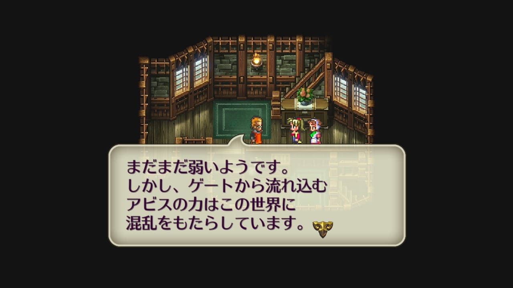
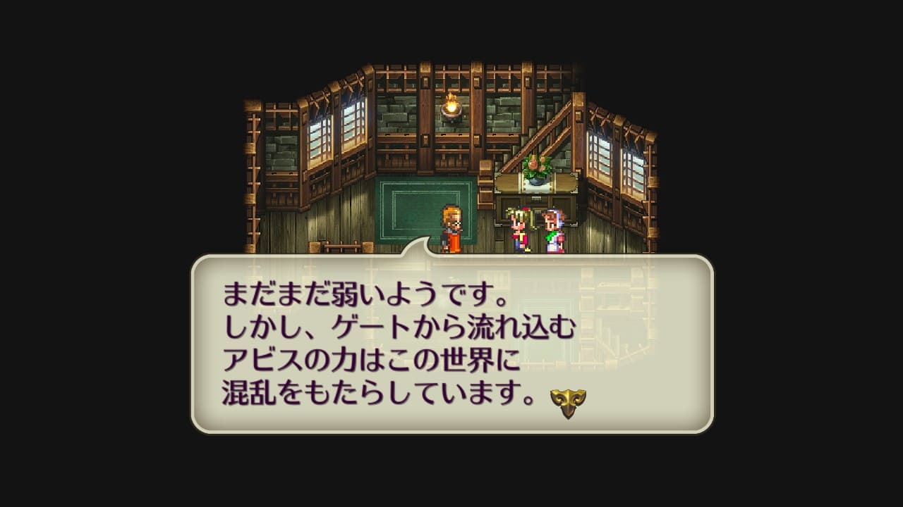
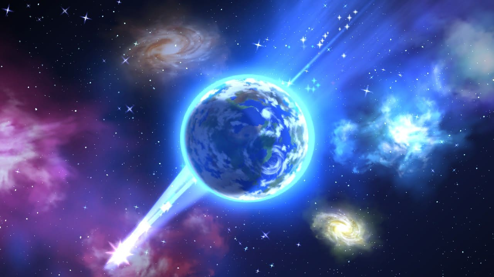

宿命の子
はじめに
宿命の子って結局何なのか？ロマサガ3の物語の中心であるにも関わらず、ゲーム本編ではあまり語られておらず、イマイチはっきりしません。
公式の設定は明かされていないのでプレイした人たちが推察するしかありません。
ここから先、宿命の子についていろいろ書き連ねていきますが、私の妄想を多分に含んでいます。『そんな考え方もあるんだね』程度で読んでみてください。
宿命の子の力
宿命の子にはアビスゲートを開け閉めする力があります。魔王は600年前にアビスゲートを開け、聖王は300年前にアビスゲートを閉じました。ゲーム中でも四魔貴族は宿命の子を探してアビスゲートを開けさせようとしていますし、サラと少年はアビスゲートを開けた後、閉じています。
宿命の子ではない主人公もアビスゲートを閉じていますが、『力が弱い状態のアビスゲート（以降、半開と呼ぶ）の中心部分を破壊することで無理矢理閉じる』事しかできないと考えています。
ゲーム開始序盤、天文学者のヨハンネスがアビスゲートについて教えてくれますが、「ゲートの力はまだまだ弱いようです」と言っています。まだ半開の状態であることがわかります。
 

下記の画像は主人公が初めてアビスゲートを目にした時のみ出てくるセリフですが、『すぐ閉じよう』を選択した後、「破壊しましょう」と言っています。壊すことで無理矢理閉じているのであって、宿命の子のような力を使って閉じるのとはまた別の話しだと個人的には解釈しています。
グゥエインは「アビスゲートが完全に開けば閉じることはできない」という趣旨のことを言っています。このことからも、宿命の子ではない主人公がアビスゲートを閉じれるのは、まだ半開の状態だからだということがわかります。
アビスゲートが全開した状態というのは、ゲーム中でサラや少年がアビスゲートを開けた時のように金色の光を放っている状態で、このようにアビスゲートを全開の状態にしたり、全開したアビスゲートを閉じることができるのはおそらく宿命の子だけ。
アビスゲートを開けるサラ（サラ主人公でアビスに突入するとき）
アビスゲートを開ける少年（サラ以外の主人公でアビスに突入するとき）
聖王家の現当主の発言に「聖王はゲートを閉じる力を持ったものを選ぶ試練を残していきました」とありますが、これは『半開したアビスゲートから現れるアビスの魔物を退けてゲートを壊す力を持ったもの』という意味だと捉えました。グゥエインが言うように、全開したアビスゲートを閉じることは、（宿命の子以外には）不可能です。


このように、宿命の子にはアビスゲートを開け閉めする力、もっと言うと、アビスゲートを全開する力と、全開したアビスゲートを完全に閉じる力があると捉えました。
宿命とは
宿命の子が持つ力は、基本的にはマイナスの方向に向かう性質があるけど、プラスの方向に向かわせることもできると捉えています。ここで言うマイナスと言うのは、アビスゲートを開ける力や、ラストバトルで出てくる破壊の力のことです。逆にプラスの方向の力は、アビスゲートを閉じる力や創造の力のことを指します。
力がマイナスかプラスのどちらに向かうかは、宿命の子を取り巻く環境や人間関係に依存して変わるものだと考えています。
『宿命』という単語を聞くと予め決まっているかのように聞こえますが、それは人間が勝手に名付けただけなのであって、どちらに転ぶかは生まれた時から決まっているものではないと考えています。
聖王は死の定めを退けることができました。なぜ退けることができたのか。聖王十二将を始め、多くの仲間に助けられたからです（聖王と聖王十二将の詳細はこちら）。
自身の力をプラスの方向に向けることができた聖王は、四魔貴族をアビスに追い返してアビスゲートを閉じました。結果的に聖王の宿命はアビスゲートを閉じることだったと言えます。

サラ以外を主人公にした場合、最後の四魔貴族を倒した後、サラは「ゲートを閉じるのは私の定めよ。」と言っています。サラは自分の宿命を『アビスゲートを閉じること』だと捉えているようです。
また、サラが主人公の場合、サラはアビスで「力をコントロールして創造に使えれば・・・・」とも言います。
サラはシノンの村で姉のエレンや仲間たちと共に過ごしてきたので、自分の力のことを多少はプラスの方向に捉えているように見えます。
一方、少年は、PUBで話しかけた時の「僕にかまわないで！」という台詞からわかるように、人と関わることを避けています。自分に関わった人は死ぬことになる運命にあると捉えているからです。
サラがアビスで「力をコントロールして創造に使えれば・・・・」と言った直後にも、「僕らの宿星は死だ。破壊の力が勝つ。」という言葉で一蹴します。
他人と関わることを拒絶し、孤独に生きてきた少年は自分の力をマイナスの方向に捉え、それが宿命だと考えているよう見えます。
プラスにもマイナスにも成りうるが、支えてくれる仲間がいないと簡単にマイナスの方向に流れてしまうのが宿命の性質なんでしょう。
破壊と創造の力
これまで宿命の子は一人しか生まれませんでしたが、ゲーム上ではサラと少年の二人が宿命の子として産まれます。二人いるということが宿命の子の力を増大させました。
以下の画像は、ラストバトル直前のサラと少年と主人公たちの会話です。
少年曰く、二人の宿命の子の力が合わさると何もかもが破壊されてしまいます。これはマイナス方向に働いた宿命の子の力の究極系でしょう。
一方サラは、その力をコントロールできれば創造の力になるというようなことを言っています。これはプラス方向に働いた宿命の子の力の究極系でしょう。
破壊するものを倒すことで創造の力を産み出し、宿命のない世界を作ろうとする主人公たち。
聖王が宿命の子の力をプラスの方向に転じさせることができたのは、聖王十二将を始めとする仲間たちのおかげでした。今回の宿命の子はサラと少年で、その仲間は主人公たちです。
マイナスの力が形をとった破壊するものを倒し、プラスの方向に転じさせることができるかどうかはサラと少年の仲間である主人公たちにかかっている。というところでラストバトル突入。
アビスとは
四魔貴族はアビスゲートを全開できる力を持つ宿命の子を探していますが、そもそもアビスゲートを通じてたどり着けるアビスとは何なのか、どこにあるのか。
練磨の書の説を借りますが、アビスとは死の星にあると考えます（練磨の書 P225より）。アビスゲートはロマサガ3の舞台となる世界とアビスを繋ぐ扉ということです。
宿命からの解放
破壊するものはサラと少年の二人の力が合わさってアビスで生まれたので、エンディングで一番最初に爆発しているのは、破壊するものが破壊したアビス＝死の星。
その爆発に巻き込まれる形でロマサガ3の舞台となる平面世界も崩壊。その後、再生。仲間のおかげでプラスの方向に転じることができた宿命の子の力で新たに創造することができたということでしょう（なぜ平面から球体になったのかは不明）。

元々死食は死の星が太陽を覆い尽くすことで発生し、それが宿命の子を産み出していた原因でした。その死の星がなくなったということは、宿命から解放されたということを意味している。また、アビス＝死の星であるならそこにいた魔貴族たちも巻き込まれる形で全滅し、世界に平和が訪れた。と言うのが、ロマサガ3の物語なんでしょう。
終わりに
ロマサガ3は聖王や魔王含め、宿命の子に関する設定は明確にはされていません。そのこともあって、エンディングを迎えてもイマイチどういう話だったのかよくわからないなって思う人も多いんじゃないかと思います。私もそうです。
今回ロマサガ3に関する情報をいろいろ調べてみたうえで、私はこういう風に物語を解釈してみました。
結局『宿命』なんてものは無く、与えられた力をどう使うのかと、信頼できる仲間たちが存在するかどうかで結末は変わるというのが、ロマサガ3というゲームのテーマだったのではないでしょうか。
本当のところがどうなのかはよくわからないですけど、個人的にはロマサガ3の理解が深まってよかったなと思います。
この記事が皆さんのロマサガ3の物語の理解の一助になってくれれば幸いです。
参考
- Neetlife Game 五魔貴族
- Neetlife Game 宿命の子
- Neetlife Game エンディング
- ロマサガエンディング論
- ニコニコ大百科 破壊するもの
- ゲーハーの窓
- yahoo知恵袋